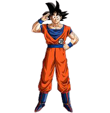

Goku |
"I am the answer to all living things that cry out for peace I am protector of the innocent. I am the light in the darkness. I am truth. Ally to good! Nightmare to you."- Goku |
Goku has multiple transformations that he attains throughout the entire series. Here is a list (PICTURES ONLY):